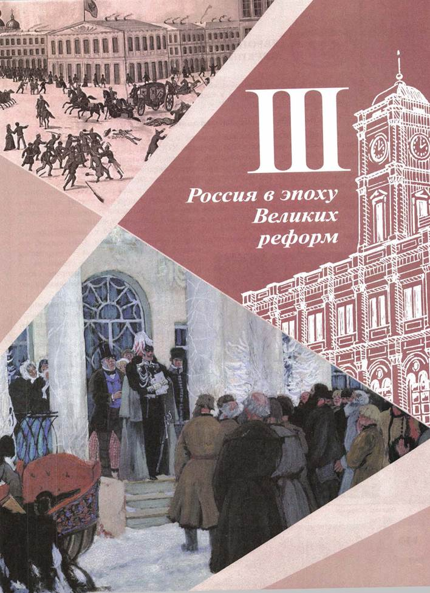
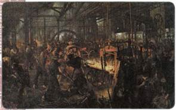
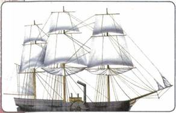
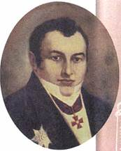
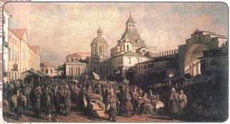
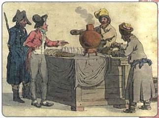
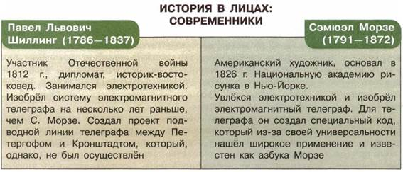

Что общего было в экономическом развитии России и передовых стран Западной Европы и Северной Америки в первой половине XIX в.? В чём состояли главные различия?
1. Европейская индустриализация
В странах Европы начавшийся ещё в XVIII в. промышленный переворот (промышленная революция) к середине XIX в. привёл к тому, что промышленное машинное производство стало основой экономики.
Новые технические изобретения активно внедрялись в производство, которое получало дополнительные импульсы к развитию. Это положительно сказалось и на экономике, и на возросшем военном потенциале, и на благополучии населения.
В 1842 г. шотландский инженер Дж. Несмит получил патент на изобретённый им мощный паровой молот для ковки. Машины с паровым молотом совершили подлинную революцию в мировом машиностроении.
Одним из важных открытий стало изобретение в 1856 г. английским инженером Г. Бессемером конвертера для производства стали. Этот способ позволил производить сталь в огромных количествах, вдвое снизил стоимость её выпуска. Бессемеровские конвертеры превратили Англию в мирового лидера по производству стали.
Процессы индустриализации (промышленной революции) затронули и транспорт. Здесь также стали использовать энергию пара. В 1820-х гг. в Англии появились первые паровозы на общественных железных дорогах. В США начали строить пароходы, способные преодолевать большие расстояния. Так, в 1819 г. первый пароход («Саванна») пересёк Атлантический океан.
Прочно входили в жизнь системы связи. Российский учёный П. Л. Шиллинг в 1832 г. изобрёл клавишный телеграфный аппарат и создал первый электромагнитный телеграф. Через год телеграф был построен в Германии, через пять лет — в Великобритании, а запатентовал это изобретение американец С. Морзе (вместе с изобретённым им специальным кодом — азбукой Морзе).
Развитие техники позволило осуществлять такие сложные операции, как прокладка кабелей связи по дну моря. Первый такой подводный кабель в 1850 г. соединил Англию с материковой Европой. А в 1866 г. был проложен кабель и через океан (он установил регулярную телеграфную связь между Европой и Америкой).

Бессемеровский процесс. Лондон. 1880 г.

Пароход «Саванна»

П. Л. Шиллинг
Подобные достижения и новшества меняли не только производство, но и повседневную жизнь людей, открывая для них новые возможности.
В европейских странах шла ускоренная социальная дифференциация населения, распадались сословные институты, исчезали феодальные привилегии. Оформилась классовая структура общества, основанная не на наследственных правах и обязанностях, а на отношении к средствам производства. Сложились два основных класса индустриального общества: буржуазия (владельцы средств производства) и пролетариат (наёмные рабочие).
Одним из основных направлений социально-экономического развития стала урбанизация, в результате которой большую часть населения составили горожане, занятые в сфере промышленного производства, торговли, люди интеллектуальных профессий. Вырос общий уровень грамотности населения. Влияние церкви ослабло. Происходило распространение светской культуры и рационального знания, психологии прагматизма.
Большую роль в социально-политических преобразованиях стран Европы сыграли Наполеоновские войны 1799—1815 гг. По мере захвата территорий европейских государств войсками Наполеона в этих странах происходила отмена феодальных институтов, секуляризация церковных земель, установление гражданских свобод.
2. Промышленный переворот в России
Сходные процессы имели место и в России. Однако на путь промышленной революции и индустриализации наша страна вступила позже, чем страны Европы, в 1830-е гг. К тому же в России промышленная революция имела свои особенности.
Переход от мануфактурного производства к фабричному, машинному происходил быстрыми темпами лишь в некоторых отраслях промышленности — хлопчатобумажной, сахарной, писчебумажной, текстильной, металлоперерабатывающей и горнозаводской.
Во многих других отраслях (например, мебельной, кожевенной, перерабатывающей сельскохозяйственную продукцию) по-прежнему преобладало мелкокустарное производство. Многие технические устройства, особенно станки, Россия приобретала у более развитых в индустриальном отношении стран.
Но главным было то, что промышленный переворот в России происходил в условиях сохранения крепостного права и феодальных пережитков (сословных привилегий, общины, помещичьего землевладения).
В первой половине XIX в. в России окончательно оформились районы хозяйственной специализации: Центральный промышленный район, Центральный чернозёмный земледельческий район (поставлял на рынок зерно и другую сельхозпродукцию), Северо-западный район (производил в основном лён и мясо-молочную продукцию), Северный район (с развитым животноводством и лесными промыслами).
Ширилось создание путей сообщения, строились железные дороги. В 1837 г. появилась первая железная дорога, связавшая Петербург с Царским Селом, в 1851 г. была построена железная дорога Петербург — Москва. В период правления Николая I было построено около 1000 вёрст железных дорог, что дало стимул к развитию машиностроения и способствовало мобилизации товарно-денежных отношений внутри страны.
3. Развитие сельского хозяйства, торговли
В течение первой половины XIX в. шло постоянное расширение внутреннего рынка, действовали ярмарки, многие из которых имели всероссийское значение.
Усилилась социальная дифференциация крестьянства за счёт расширения отходничества, предпринимательской деятельности зажиточных крестьян.
Помещичьи и крестьянские хозяйства всё более втягивались в рыночные отношения, участвовали в производстве продукции и торговле. Однако большинство хозяйств было слабо вовлечено в техническое переоснащение. Не более 3 % помещиков использовали технические новшества, удобрения, новые приёмы агрокультуры.
Выросли объёмы внешней торговли. Только ежегодный вывоз хлеба из страны за первую половину XIX в. вырос в 6 раз. Укреплению финансовой системы России способствовала денежная реформа Е. Ф. Канкрина в 1839—1843 гг.
На международном хлебном рынке главным конкурентом России были Соединённые Штаты Америки, которые в середине XIX в. вывозили уже в 7 раз больше хлеба, чем Российская империя. Успешной конкуренции с Америкой мешало сохранение многочисленных феодальных пережитков в сельском хозяйстве: крепостничества, крестьянского малоземелья, экстенсивных способов ведения хозяйства, общинных порядков (чересполосицы и ежегодных переделов земли).

Лубянский толкучий рынок. Середина XIX в. Художник П. П. Верещагин
4. Предпосылки отмены крепостного права в России
Понимая отрицательные стороны сохранения крепостного права, власти страны предпринимали попытки изменить ситуацию.
На протяжении первой половины XIX в. и Александр I, и Николай I не раз поднимали этот вопрос, созывали так называемые секретные комитеты по крестьянскому вопросу. Однако правители понимали, что их главная опора в стране — дворянство и оно (особенно крупнопоместное) вовсе не стремится лишиться своих крепостных. Чуть более свободно власть действовала в отношении государственных крестьян, но и они оставались прикреплёнными к земле.
Вспомните основные указы, касающиеся крестьян, изданные в правление Александра I и Николая I.
В то же время власть не могла не признавать тот факт, что сохранение крепостного права ведёт к отставанию страны. Особенно ярко это выявилось в ходе Крымской войны, которая окончилась поражением России. Чтобы сохранить за собой роль мирового лидера, Россия должна была меняться. Кроме того, крепостное право передовой Европой воспринималось как пережиток, свидетельство отсталости и «варварства».
Нельзя было не прислушаться и к общественному мнению внутри страны. В среде дворянства были те, кто понимал важность крестьянского вопроса. Некоторые дворяне, придерживавшиеся передовых взглядов, организовывали в своих поместьях очень эффективное хозяйство, стремились к получению большей прибыли, отпускали своих крестьян на волю (воспользовавшись указом о «вольных хлебопашцах» и др.) и вовлекали их в рыночное производство.
Крестьянство, нажим на которое постоянно рос, также переживало не лучшие времена. В 1850-х гг. нередки были восстания крестьян. Они были разрозненными, но таили в себе опасность серьёзных проблем в будущем.
По этим причинам на страницах газет и журналов проблема отмены крепостничества поднималась в 1850-е гг. довольно часто. Даже консерваторы, традиционно противящиеся любым переменам, заговорили о необходимости отмены крепостного права. Сторонник «теории официальной народности» историк М. П. Погодин в 1854—1856 гг. составил «Письма» к царю, в которых указывал, что дальнейшее сохранение крепостного права опасно для России.
В конце 1850-х гг. представители либеральной интеллигенции устроили так называемую «банкетную кампанию» с застольными речами в пользу отмены крепостного права. Из либеральной среды посыпались «письма», «записки», «адреса» на имя царя с предложениями отмены крепостного права. Их авторами были и славянофилы (А. И. Кошелев, Ю. Ф. Самарин), и западники (К. Д. Кавелин, Б. Н. Чичерин). Учёные К. Д. Кавелин и Б. Н. Чичерин в 1855 г. в «Письме к издателю» (А. И. Герцену) спорили с представителями радикального крыла общественной мысли о методах решения российских проблем. Они с гневом отвергли революционные теории, осудили «кровавую купель революций», полагая, что предпочтительнее «самодержавные реформы».
Одновременно многие сторонники реформ понимали, что поскольку крепостное право являлось важнейшей из основ, на которых держалось всё государство, то его отмена неизбежно повлечёт за собой изменения во всех сферах жизни страны (как в экономике, так и в управлении, военном деле, образовании и др.).

Крестьянин-торговец в городе. Середина XIX в. Акварель X. Г. Гейслера

ПОДВЕДЁМ ИТОГИ
В первой половине XIX в. в Западной Европе сложился индустриальный тип общества, основанный на машинном производстве, классовой структуре, светской культуре. В России к середине XIX в. оформились предпосылки буржуазных реформ. Необходимо было не только упразднить крепостное право, но и провести серию социально-экономических и общественно-политических реформ российского общества.
Вопросы и задания для работы с текстом параграфа
1. Объясните суть процесса индустриализации. 2. В чём состояли особенности промышленного переворота в России? Какие причины ограничивали его масштабы? 3. Перечислите внешние причины, которые стимулировали техническую модернизацию промышленности и сельского хозяйства. 4. Какие предпосылки для осуществления буржуазных реформ сложились в России в середине XIX в.? 5. Основываясь на тексте параграфа, выпишите в тетрадь перечисленные предпосылки отмены крепостного права.
Думаем, сравниваем, размышляем
1. Как вы думаете, почему XIX век стал веком европейских революций?
2. В конце 1850-х гг. и консерваторы, и либералы выступали за необходимость покончить с крепостничеством. Чем объясняется подобное единодушие? 3. Почему крестьянский вопрос был одной из главных проблем рассматриваемого периода? 4. Подготовьте тезисы к дискуссии на тему «Почему отменить крепостное право не удалось ни Александру I, ни Николаю I, хотя в период их правления действовали секретные комитеты, обсуждавшие проекты реформ?». 5. Подготовьте доклад, посвящённый техническим открытиям середины XIX в. в России (на примере одного или нескольких изобретений). Выясните информацию об авторах этих изобретений.